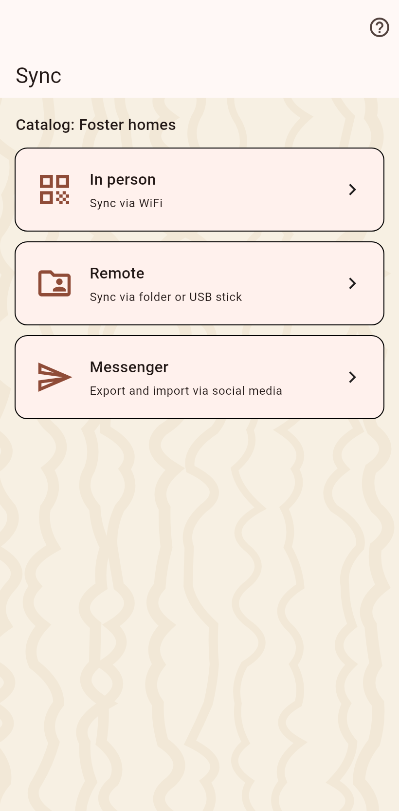
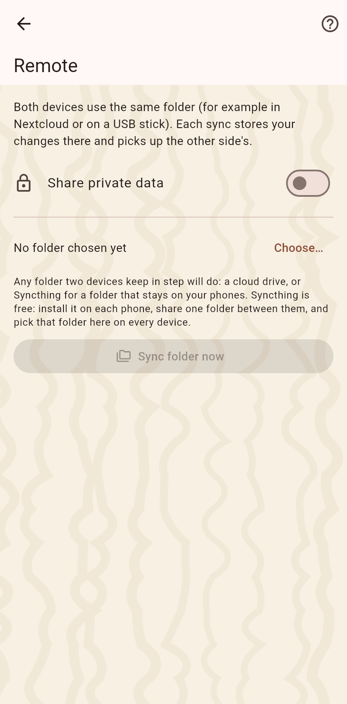

1. The sync page
Three ways: in person, a shared folder, a bundle. The shared folder for partners you do not meet.

2. The folder
Choose the folder on a cloud client or a USB stick; the phone grants it once. From then on the watch line at the top says whose changes wait, a tap syncs, and the switch merges on its own. Do the same on the partner's device with the same folder.
